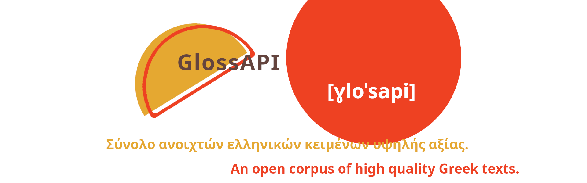

To glossAPI απαρτίζεται από κειμενικά δεδομένα, υψηλής ποιότητας (επιστήμη, λογοτεχνία, νομικά κ.α.). Τα κείμενα είναι καθαρισμένα και αποδελτιωμενα με τρόπο που καθιστά εύκολη τη στατιστική ανάλυση αλλά και την εκπαίδευση γλωσσικών μοντέλων. Το αποθετήριο είναι εντελώς ανοιχτό ως προς τα αποτελέσματα και τα εργαλεία που αναπτύξαμε στη πορεία, με έμφαση στην επαναχρησιμοποίηση από την ερευνητική, εκπαιδευτική, και τεχνολογική κοινότητα. Ευελπιστούμε να γίνει μια πρώτη κίνηση για τη συμμετοχή και προσφορά άλλων οργανισμών στα ελληνικά, ανοιχτά, κειμενικά δεδομένα.